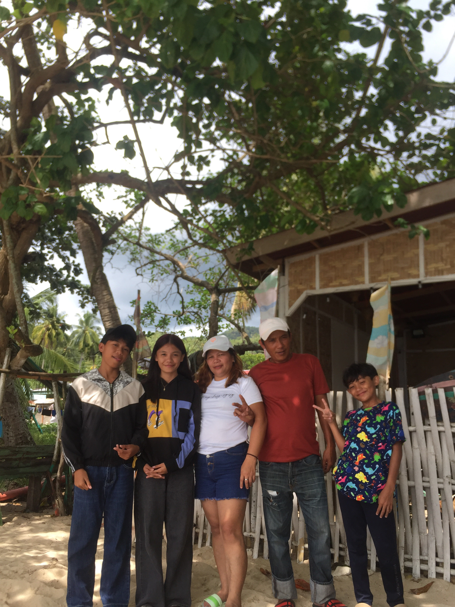

2015–2016 · Korean drama
Reply 1988
Five childhood friends and their families share one alley in Ssangmun-dong, Seoul.
Read the story ↘A personal collection of stories

Some stories are more than something we watch. They become memories and reminders that we carry long after the screen fades to black. These four changed how I see family, pressure, imagination and time.
Five childhood friends and their families share one alley in Ssangmun-dong, Seoul.
Read the story ↘
Three engineering students face pressure and look for a path that feels true.
Read the story ↘
Two lonely neighbors invent a secret kingdom in the woods to cope with life.
Read the story ↘
Four estranged siblings reunite when their father has only seven weeks left.
Read the story ↘Four stories. Countless memories.
Tap a photo to read what’s on the back. Drag them to rearrange the scrapbook.
I chose these stories because each one left me with something I can bring into my own life.
They remind me to appreciate the people around me, find my own direction, keep my imagination alive, and make time for the people I call family. They are different stories, but each one made me pause and think about the things that matter.
“Not every story changes your life all at once. Sometimes, it simply changes how you see things.”
Different worlds, different people —
but lessons that feel close to home.
 01 / THE BEAUTY OF ORDINARY DAYS
01 / THE BEAUTY OF ORDINARY DAYS
2015–2016 · SOUTH KOREAN DRAMA
The beauty of ordinary days.
Set in a close neighborhood in Ssangmun-dong, this story follows five childhood friends and their families as they grow up, face changes, and share the small moments of everyday life.
This story reminds me that some of life's most meaningful memories are created in the simplest moments. It made me appreciate family, friendship, and the people who quietly make life feel special.
 02 / FIND YOUR OWN DEFINITION OF SUCCESS
02 / FIND YOUR OWN DEFINITION OF SUCCESS
2009 · INDIAN COMEDY-DRAMA
Finding your own definition of success.
Three engineering students experience friendship, pressure, and the challenge of choosing a path that feels true to themselves.
This movie reminds me that success should not be measured only by grades or achievements. It taught me that learning should come from curiosity and passion, not just fear of failure or the expectations of others.
 03 / WHERE IMAGINATION BECOMES AN ESCAPE
03 / WHERE IMAGINATION BECOMES AN ESCAPE
2007 · FANTASY-DRAMA
Where imagination becomes an escape.
Two children create an imaginary kingdom where they can be brave, free, and understood. Their friendship becomes a meaningful part of their lives.
This story reminds me how powerful imagination can be. It also taught me that the people who enter our lives can leave something meaningful behind, even when circumstances change.
 04 / THE PEOPLE WE CALL HOME
04 / THE PEOPLE WE CALL HOME
2017 · FILIPINO FAMILY COMEDY-DRAMA
The people we call home.
Four siblings reunite after learning about their father's illness. As they spend time together, old misunderstandings and family struggles come to the surface.
This movie reminds me that family relationships are not always perfect. Sometimes, misunderstandings and pride create distance. But it is important to appreciate the people we love while we still have the chance.
Click each note. Some lessons are simple, but they are worth remembering.
Tap for a small message you might need today.
“Some stories end. Their lessons stay.”
Open one when you need it.
A SMALL INTERACTIVE CORNER
Sometimes, the right story finds you at the right time. Choose the feeling that sounds most like you today.
Maybe you didn't find this story by accident.
Maybe it's exactly what you needed today.
Visual notes inspired by the feeling and world of this story.
A collection of little moments from this story's world.
Official trailer embedded from YouTube for educational purposes.
They remind us of things we sometimes forget. To appreciate the people around us, to keep dreaming, to find our own way, and to remember that even ordinary moments can become something worth holding onto.
These are not just stories I watched.
They are stories that stayed with me.